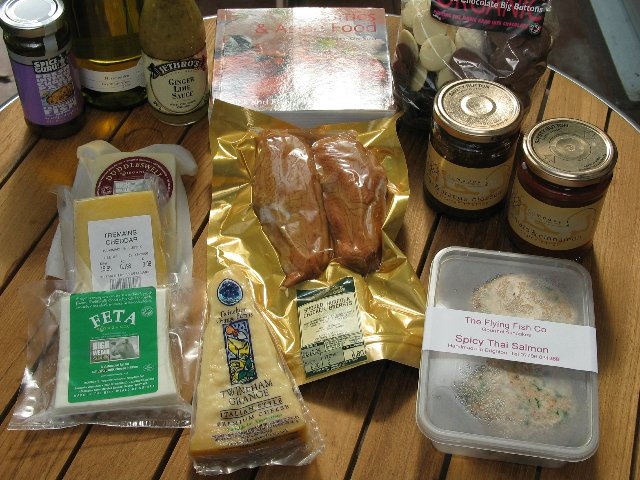

Our local purchases

Spice Guru Fabulous Fish sauce, Limney Organic dry white wine from Festival Wine Merchants, Jethros Ginger Lime Sauce, Big Mixed Buttons from The Chocolate Alchemist, Tomato and Cinnamon tagine sauce and Figs & Orange Blossom Moroccan Chutney from Nomades Moroccan Recipes, Twineham Grange Farmer's Hand cheese from Bookham Cheese and Pasta, other cheeses and smoked chicken from Sussex and the City and fish cakes from The Flying Fish Co.
Add a comment
| EXIF


Copyright © Jane Dallaway. Terms of Use